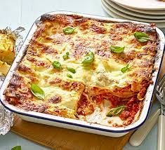

Lasange

Description
Lasagna is a timeless Italian dish that epitomizes comfort food at its finest. Layers of tender lasagna noodles are nestled between rich and flavorful meat sauce, creamy cheese filling, and melted mozzarella cheese, creating a hearty and satisfying meal that warms the soul.
Ingredients
- 1 pound (450g) ground beef or Italian sausage
- 1 onion, finely chopped
- 2 cloves garlic, minced
- 1 can (28 ounces) crushed tomatoes
- 1 can (6 ounces) tomato paste
- 1 teaspoon dried oregano
- 1 teaspoon dried basil
- Salt and pepper to taste
- 2 tablespoons olive oil
Steps
- In a large skillet or saucepan, heat olive oil over medium heat. Add chopped onions and minced garlic, and sauté until softened and fragrant.
- Add ground beef or Italian sausage to the skillet, breaking it up with a spoon, and cook until browned.
- Stir in crushed tomatoes, tomato paste, dried oregano, dried basil, salt, and pepper. Bring the sauce to a simmer, then reduce the heat and let it simmer for about 20-30 minutes, stirring occasionally, until the flavors meld together and the sauce thickens.
- In a mixing bowl, combine ricotta cheese, grated Parmesan cheese, egg, chopped parsley, salt, and pepper. Mix until well combined.
- Preheat your oven to 375°F (190°C).
- Spread a thin layer of meat sauce on the bottom of a 9x13-inch baking dish.
- Place a layer of cooked lasagna noodles over the sauce, slightly overlapping.
- Spread half of the cheese filling evenly over the noodles.
- Spoon half of the remaining meat sauce over the cheese filling, spreading it out evenly.
- Sprinkle a layer of shredded mozzarella cheese over the sauce.
- Repeat the layers: noodles, cheese filling, meat sauce, and mozzarella cheese.
- Finish with a final layer of noodles, meat sauce, and a generous sprinkle of mozzarella cheese on top.
- Cover the baking dish with aluminum foil and bake in the preheated oven for 25-30 minutes.
- Remove the foil and continue baking for an additional 10-15 minutes, or until the cheese is melted and bubbly, and the edges are golden brown.
- Remove the lasagna from the oven and let it rest for 10-15 minutes before serving. This allows the lasagna to set and makes it easier to slice.
- Slice the lasagna into squares and serve hot, garnished with additional fresh parsley if desired.
- Enjoy the delicious homemade lasagna with your family and friends!